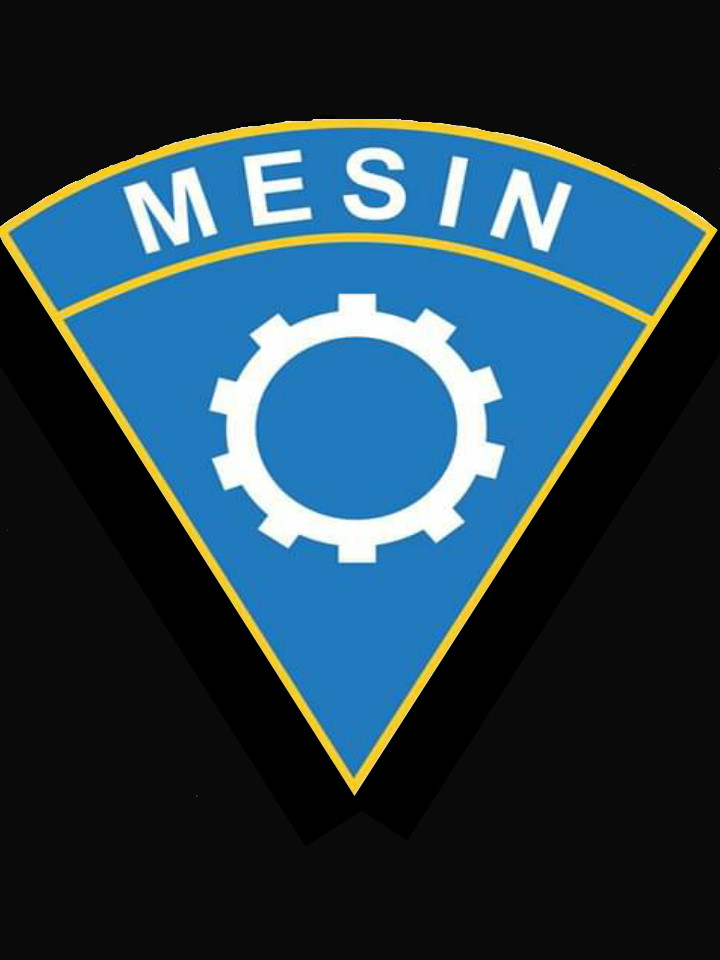

⚙️ TEKNIK PERMESINAN (TP)
Fokus pada teknologi **Mesin CNC**, **Bubut**, dan **Pengelasan Industri 4.0**. Membekali siswa dengan kemampuan manufaktur presisi.
Prospek: Teknisi Mesin CNC, Operator Manufaktur, Wirausaha Fabrikasi.

![[TEMPAT LOGO ANDA]](WhatsApp Image 2025-10-08 at 21.05.25.jpeg)
Mencetak Generasi Unggul, Siap Kerja, dan Berdaya Saing Global.
Lihat Jurusan Kami"Kami berkomitmen penuh untuk mendidik dan melatih generasi muda Jatisari agar siap menghadapi tantangan Industri 4.0. Melalui fasilitas modern seperti **CNC** dan **Pengelasan 4.0**, kami yakin lulusan kami akan menjadi SDM unggul di bidangnya."
Hormat kami,
Ade Hasan Alwan, S. Ag

Menjadi SMK unggulan yang menghasilkan tamatan berakhlak mulia, kompeten di bidang teknologi, dan mampu bersaing di era global dengan wawasan **Industri 4.0**.
Fokus pada teknologi **Mesin CNC**, **Bubut**, dan **Pengelasan Industri 4.0**. Membekali siswa dengan kemampuan manufaktur presisi.
Prospek: Teknisi Mesin CNC, Operator Manufaktur, Wirausaha Fabrikasi.
Fokus pada penguasaan jasa perbaikan dan manajemen sistem pada kendaraan ringan (mobil) dengan fasilitas **Bengkel Werhos** modern.
Keunggulan Tambahan: Pembelajaran **Bahasa Jepang** untuk peluang kerja dan magang di luar negeri.
Mesin **Bubut**, Frais, **CNC**, **Pengelasan Industri 4.0**.
**Bengkel Werhos** TKR standar industri.
Fasilitas desain CAD/CAM dan TIK.
**Kantin**, **WC** bersih, Ruang Kelas.
**Lapang Bola** dan ruang **OSIS**.
Pusat pengembangan kepemimpinan dan pelaksanaan program sekolah.
Wadah kreativitas siswa di bidang seni rupa dan kerajinan.
Program pendalaman keahlian CNC, Las Sertifikasi, dan Otomotif.